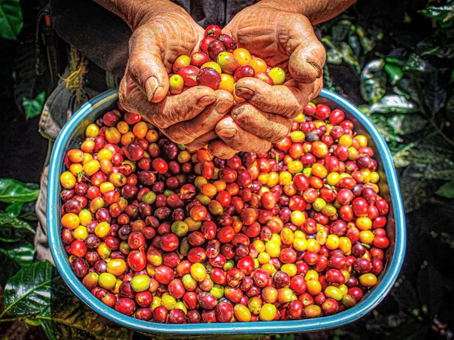
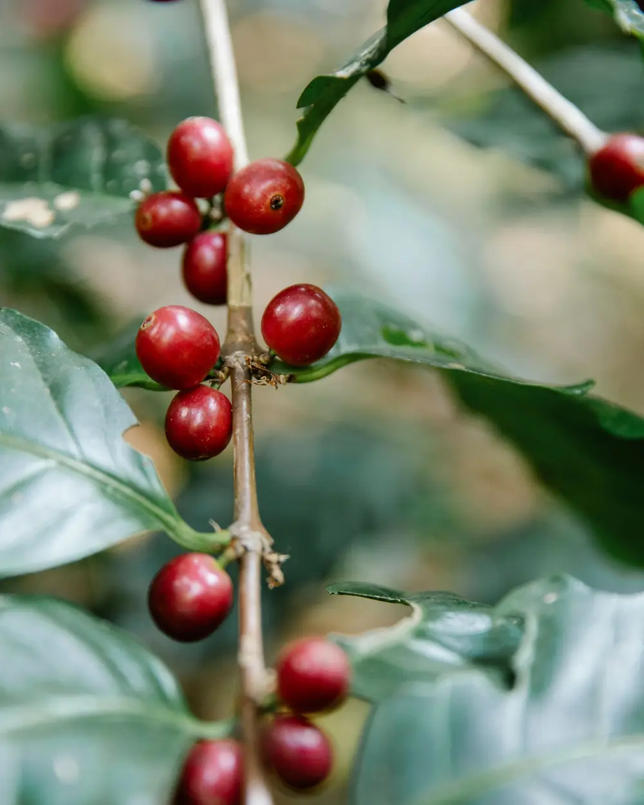
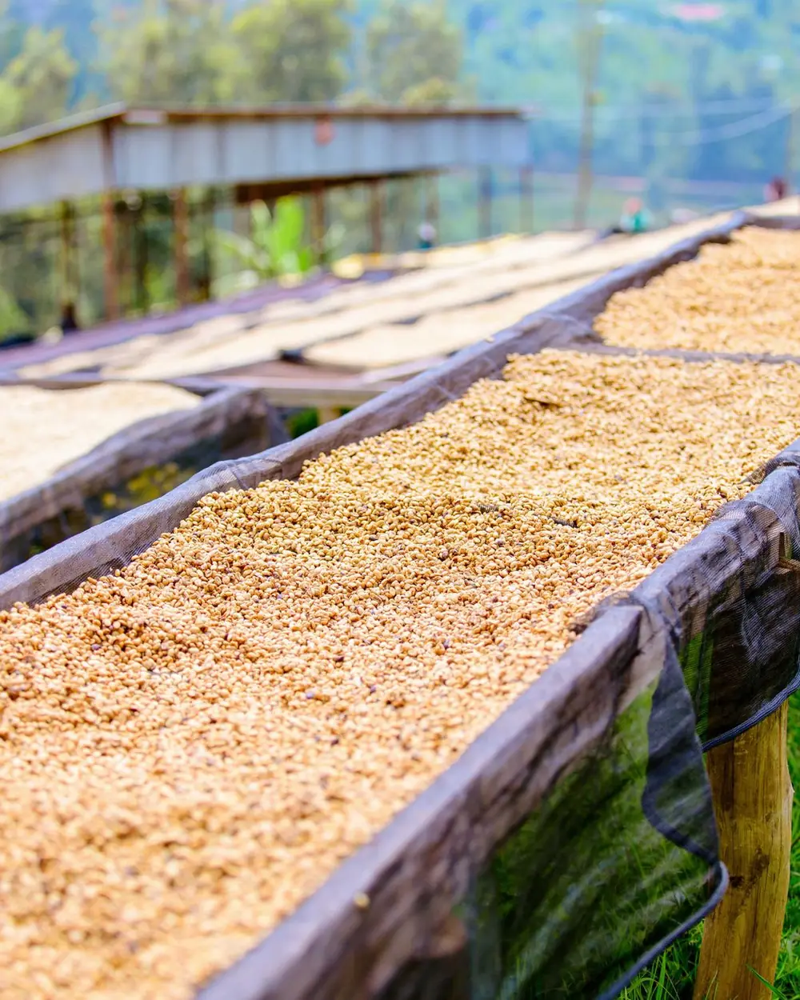
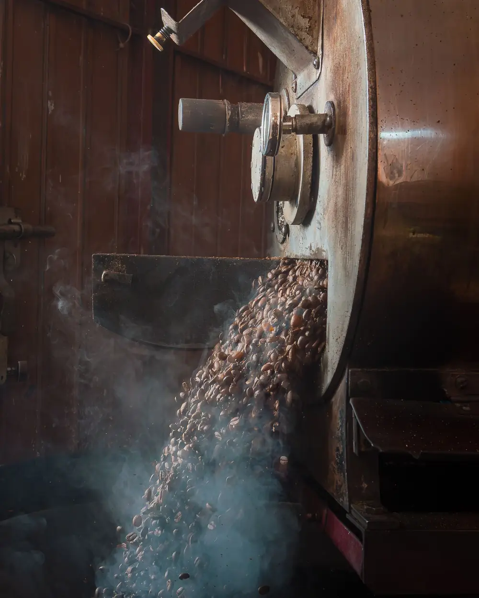
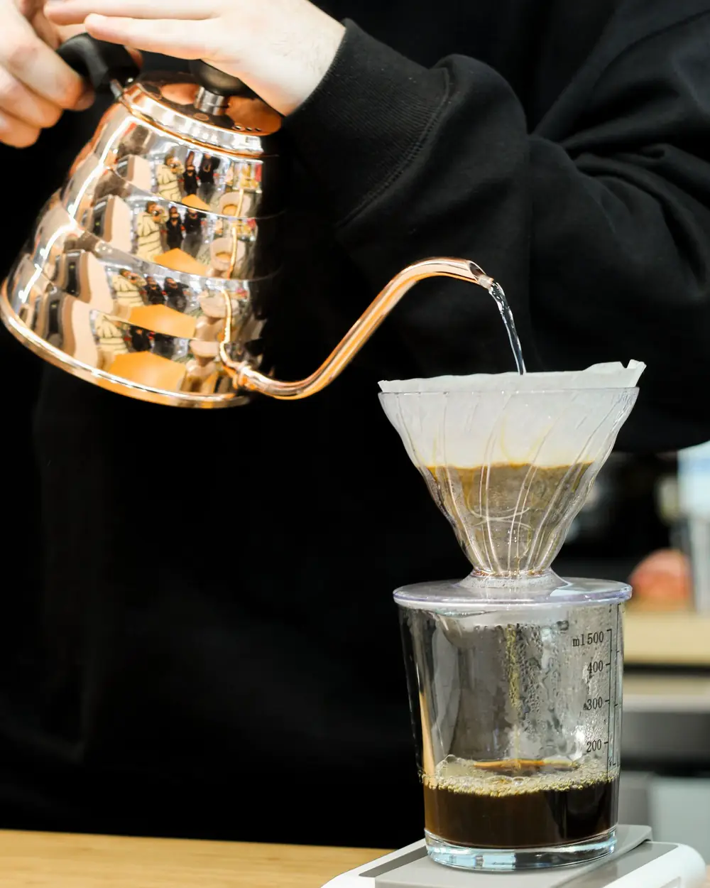
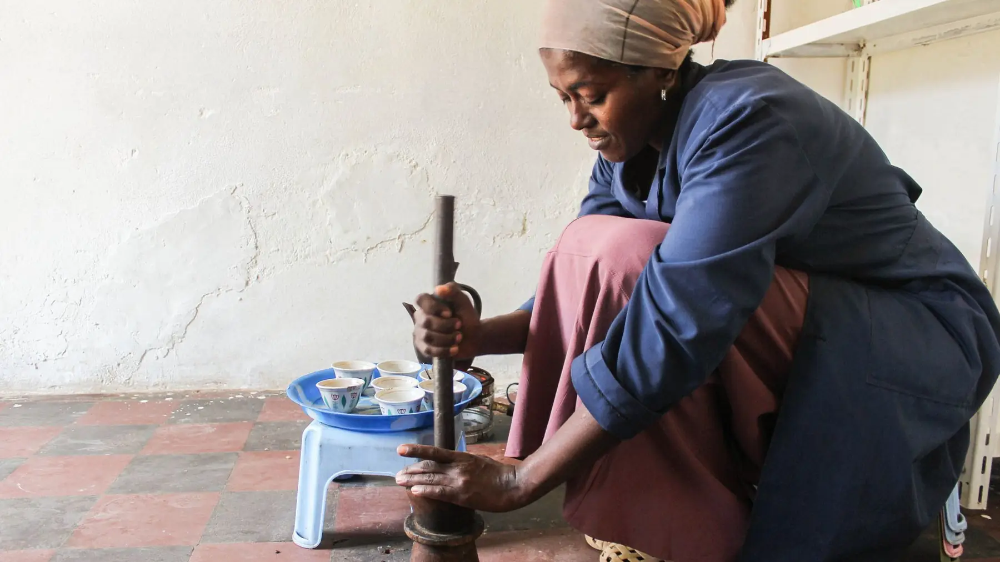
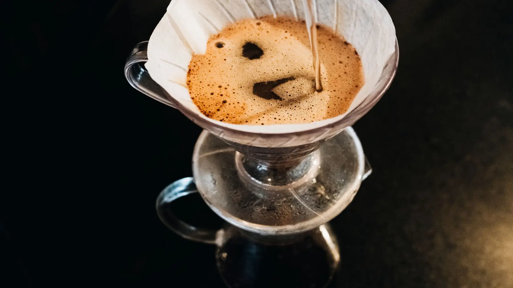

Coffee flavors across continents
Roast &Ritual
Six origins, home recipes and vegetarian bites, brewed the way the world does it.
Since the ninth century
From Cherry to Cup
Every cup has travelled a long way before it reaches you. This is the road it took.

01
Cherry
It starts as a fruit
Coffee is the seed of a cherry. The cherries ripen from green to deep red, and only the ripe ones are picked by hand. One tree gives roughly half a kilo to a kilo of roasted coffee a year.

02
Process
Then the sun does its work
The seeds are separated from the fruit. Natural coffee dries whole in the sun for weeks and turns sweet and fruity. Washed coffee has the fruit removed in water and tastes clean and bright.

03
Roast
Fire turns green to brown
Green beans are roasted in a drum, or in a pan over coals as in Ethiopia, between about 180 and 240 °C. Around 196 °C the first crack sounds like popcorn. Time and heat decide light, medium or dark.

04
Brew
And then, the ritual
Fresh grinding, water at 90 to 96 °C and a little patience. Hot water pulls the oils and sugars out of the grounds, and the first sip completes the ritual.

Kaffa, Ethiopia
“Legend says a goat herder named Kaldi saw his goats dancing after eating red cherries. In Ethiopia, coffee is still a ceremony: roasted in front of you, brewed in a clay jebena, and shared in three rounds.”
ቡና Buna, the Amharic word for coffee
Where it grows
Six Origins, One Planet
Drag to turn the globe
In every sip
The Science of Your Cup
Scroll to build the moleculeC8H10N4O2
